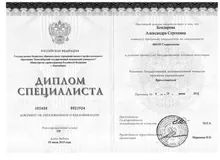
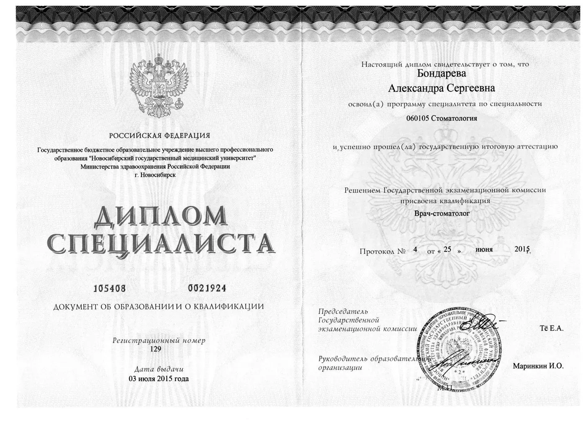
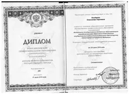
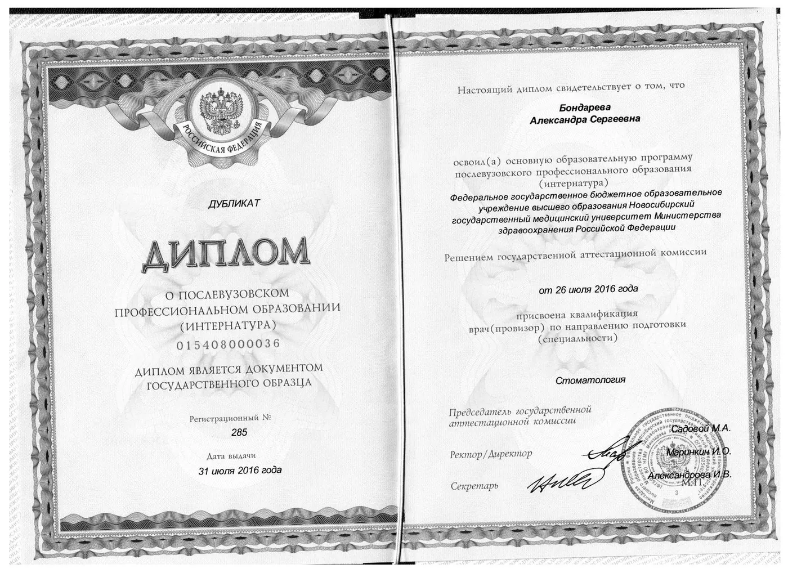
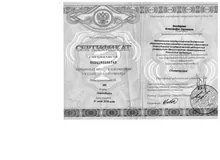
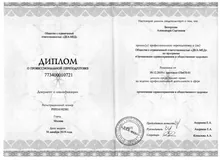
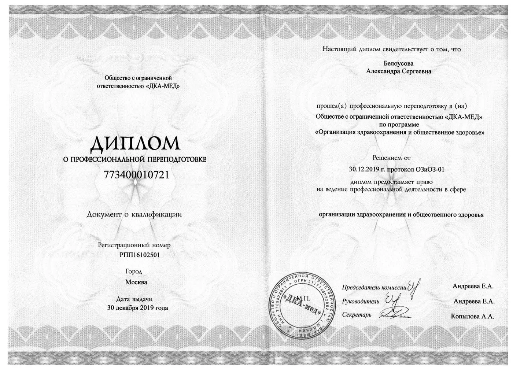
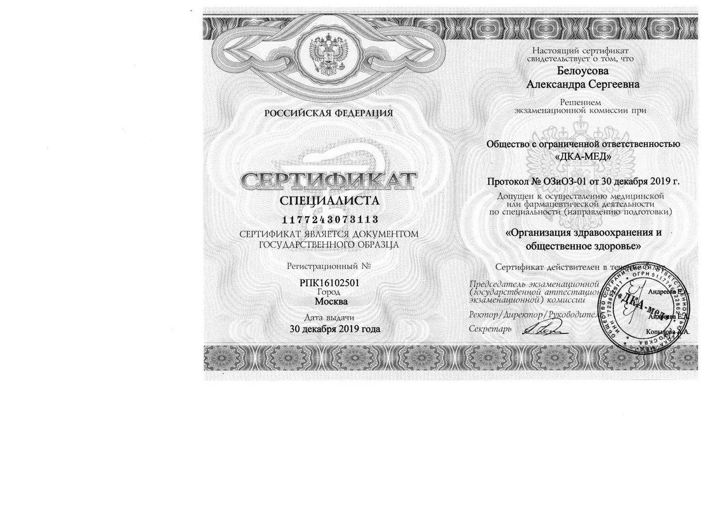
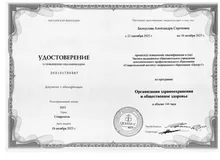
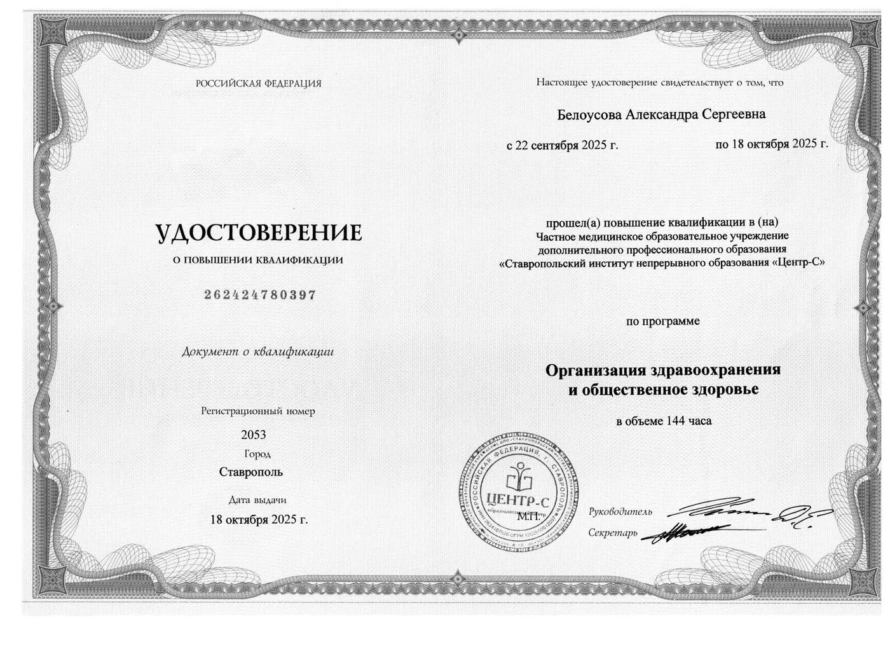

Правовая информация
Документы
Всё, что клиника обязана показать пациенту по приказу Минздрава России № 118н и правилам оказания платных медицинских услуг. Разделы идут в том же порядке, что и в приказе.
О клинике
- Сведения о медицинской организации
Полное наименование и реквизиты, адреса, режим работы, лицензия и перечень работ по ней, порядок оказания услуг.
- Лицензия на медицинскую деятельность
Номер, дата выдачи, лицензирующий орган и полный перечень работ и услуг, на которые выдана лицензия.
- Документы об образовании и квалификации врача
Диплом специалиста, интернатура, профессиональная переподготовка и повышение квалификации — с указанием учреждения, программы и года.
- Выписка из реестра лицензий с двумерным кодомготовится
Бумажные лицензии с 2022 года не выдают: действительность проверяется по выписке из государственного реестра.
- Выписка из ЕГРЮЛпо запросу
Предоставляется для ознакомления по требованию — по телефону или в клинике.
Документы об образовании врача
Нажмите на документ, чтобы рассмотреть его целиком. Документы 2015 и 2016 годов выданы на фамилию Бондарева — врач сменила фамилию после замужества.

Диплом специалистаНовосибирский государственный медицинский университет Минздрава России · 2015

Специальность «Стоматология», квалификация «врач-стоматолог». Очная форма обучения, пять лет.

Диплом об окончании интернатурыНовосибирский государственный медицинский университет Минздрава России · 2016

Послевузовское профессиональное образование по специальности «Стоматология».

Сертификат специалиста по стоматологииНовосибирский государственный медицинский университет Минздрава России · 2016
Допуск к осуществлению медицинской деятельности по специальности «Стоматология». С 2021 года допуск подтверждается свидетельством об аккредитации.

Диплом о профессиональной переподготовкеООО «ДКА‑МЕД», Москва · 2019

Программа «Организация здравоохранения и общественное здоровье», 576 часов.
Сертификат специалиста по организации здравоохраненияООО «ДКА‑МЕД», Москва · 2019

Специальность «Организация здравоохранения и общественное здоровье».

Удостоверение о повышении квалификацииСтавропольский институт непрерывного образования «Центр‑С» · 2025

Программа «Организация здравоохранения и общественное здоровье», 144 часа.
Платные услуги
- Цены на услуги
Действующий прейскурант с кодами по номенклатуре медицинских услуг. Точная стоимость лечения фиксируется в письменном плане после осмотра.
- Образцы договоров на оказание платных медицинских услугготовится
Для взрослого пациента, для ребёнка через законного представителя и для заказчика — юридического лица.
- Правила предоставления платных медицинских услуг
Постановление Правительства Российской Федерации от 30.05.2026 № 659, действует с 1 сентября 2026 года. Официальный текст на портале правовой информации.
Права пациента
- Права и обязанности пациента
Выбор врача, информация о состоянии здоровья, врачебная тайна, отказ от вмешательства, копии медицинских документов.
- Информированное добровольное согласие на медицинское вмешательствоформа
Подписывается до начала лечения. Форма и порядок — по статье 20 Федерального закона № 323‑ФЗ.
- Правила поведения пациента в клиникеготовится
Утверждаются приказом по организации. Договор ссылается на них в силу части 3 статьи 27 Федерального закона № 323‑ФЗ.
- Право получить медицинскую помощь бесплатно
Клиника работает на платной основе. Тот же вид помощи можно получить без взимания платы в медицинских организациях, участвующих в программе государственных гарантий.
Персональные данные
- Политика обработки персональных данных
Какие данные обрабатываются, зачем, сколько хранятся и кому передаются.
- Как направить запрос о своих данных
Что указать в запросе по статье 14 Федерального закона № 152‑ФЗ и в какие сроки клиника обязана ответить.
- Согласие на обработку персональных данныхформа
Бланк, который подписывается на первом приёме. Отдельно — согласие на обработку сведений о состоянии здоровья.
- Настройки cookie
Изменить или отозвать согласие на статистические cookie можно в любой момент: кнопка «Настройки cookie» стоит в самом низу каждой страницы.
Обращения и контроль
- Отзыв, предложение или претензия
Лично в клинике, по телефону или письмом по адресу клиники. Срок ответа на письменное обращение — 30 дней.
- Контролирующие органы
Министерство здравоохранения Краснодарского края, территориальный орган Росздравнадзора, Управление Роспотребнадзора по Краснодарскому краю.
- Клинические рекомендации Министерства здравоохранения
Рубрикатор, на основе которого оказывается медицинская помощь.
Пометка «готовится» означает, что документ существует в клинике, но ещё не выложен здесь; «форма» — бланк, который подписывают на приёме; «по запросу» — выдаётся по требованию. Любой из них можно попросить по телефону +7 (989) 751‑28‑51.